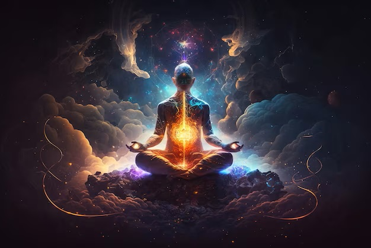

Cricket is a sport that requires a combination of physical fitness, skill, and strategy. The game involves a variety of techniques, including batting, bowling, fielding, and wicket-keeping. It also involves mental skills such as concentration, decision-making, and quick reflexes.
Meditation
Meditation is a practice that involves training the mind to achieve a state of relaxation and inner peace. It is a simple yet powerful technique that has been used for thousands of years to improve mental, physical, and emotional well-being.

Additional Hobbies
Hiking: Hiking involves walking in nature and exploring the great outdoors. It can be a great way to stay active and fit, while also enjoying the beauty of nature.
Photography: Photography involves capturing images with a camera and can be a fun and creative way to express yourself. You can experiment with different types of photography, such as landscape, portrait, or macro photography.
Cooking: Cooking is a great hobby for those who enjoy experimenting with flavors and creating new dishes. It can be a fun and social activity, and can also lead to healthier eating habits.